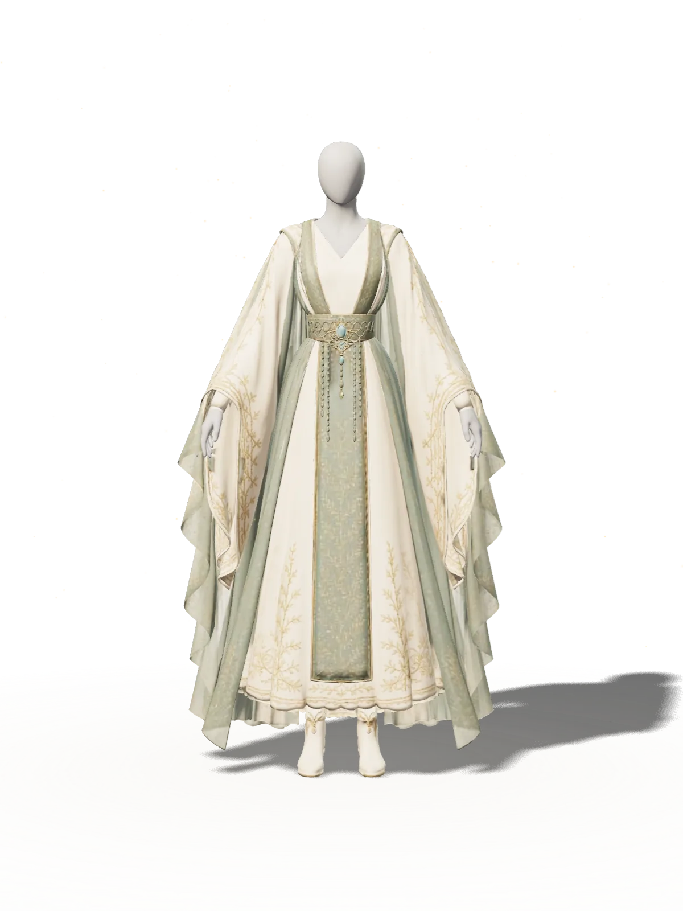

01
360° — Every angle
ぐるりと、
確かめられる。
スクロールに合わせて一回転。写真を何十枚も並べる代わりに、ひとつのモデルがすべての角度に答えます。
ドラッグ／← → キーで自由に回転
02
Detail — Up close
一針の刺繍まで、
寄って見る。
スクロールするとカメラが寄り、帯の装飾や刺繍の流れを間近に。168の部位に分かれていたテクスチャを一枚にまとめ、描画命令を1回に集約して、軽さも確保しています。
03
Colorway — Live dye
その場で、
染め替える。
生地の色だけを抽出し、金糸の刺繍や象牙色はそのまま。色を選ぶと、染料が流れ落ちるように上から切り替わります。
Celadon — 青磁
この環境では3D表示に対応していないため、静止画でご覧いただいています。
見るためのWebではなく、確かめるためのWebを。光の当たり方、布の重なり、色を選び直したときの印象まで。手に取る前の迷いを、画面の中で解いていく。それが、私たちのつくる体験です。
— Taro Yamada Studio
Craft.
できること
-
01
リアルタイム3DReal-time 3D
商品や空間を、ブラウザの中で動かせる形に。モデルの軽量化、ライティング、質感の調整まで一貫して行います。
-
02
スクロール演出Motion & Storytelling
読み進める動作そのものを演出に。カメラ、文字、光を一本の流れで設計し、情報が自然に頭に入る順序をつくります。
-
03
コンフィギュレーターConfigurator
色・素材・仕様の切り替えを、その場で。撮影カットを増やさずに選択肢を見せ、購入前の迷いを減らします。
-
04
誰にでも届く設計Accessible by default
演出と読みやすさは両立できます。文字拡大・高コントラスト（右上）、キーボード操作、動きを減らす設定への対応を標準で組み込みます。
Proof.
このページ自体が、実証です。
3D表示に対応していない環境や、OSで「視差効果を減らす」を選んでいる場合は、静止画と動きを止めた表示に切り替わります。体験に差はあっても、情報は欠けない設計です。
Works.
課題と、その答え
-
01
公共情報サイト再設計Accessibility
完遂率 +31% -
02
B2B相談導線の最適化Conversion
CVR 1.9× -
03
ブランドページ刷新Branding
滞在 +47%
FAQ.
よくある質問
3Dを入れると、ページが重くなりませんか？
最初に軽い静止画を表示し、3Dは裏で読み込んでから切り替えます。モデルは形状の圧縮とテクスチャの統合で軽くし、画面の外にあるときは描画を止めます。このページのドレスも同じ仕組みで動いています。
スマートフォンや古い端末でも見られますか？
はい。3Dに対応していない環境では静止画に、「視差効果を減らす」設定では動きを止めた表示に切り替わります。どの環境でも同じ情報に届くことを優先しています。
既存のサイトに、一部だけ組み込めますか？
可能です。商品ページの一枠だけ、キャンペーンページだけ、といった段階的な導入から始められます。
3Dモデルが手元になくても依頼できますか？
はい。CADデータや写真からの制作、生成ツールで作ったモデルのWeb向け最適化まで対応します。
Let’s make it
tangible.
3Dを使うべきか迷っている段階から、ご相談ください。目的に対して最適な表現を、一緒に選びます。
hello@example.com